Thinking in Data Science Workshop 03
06-08-2022
Welcome back to our Thinking in Data Science Series!
Reminders!
Program website.
adrian701.github.io/DS_HPEGLCP/
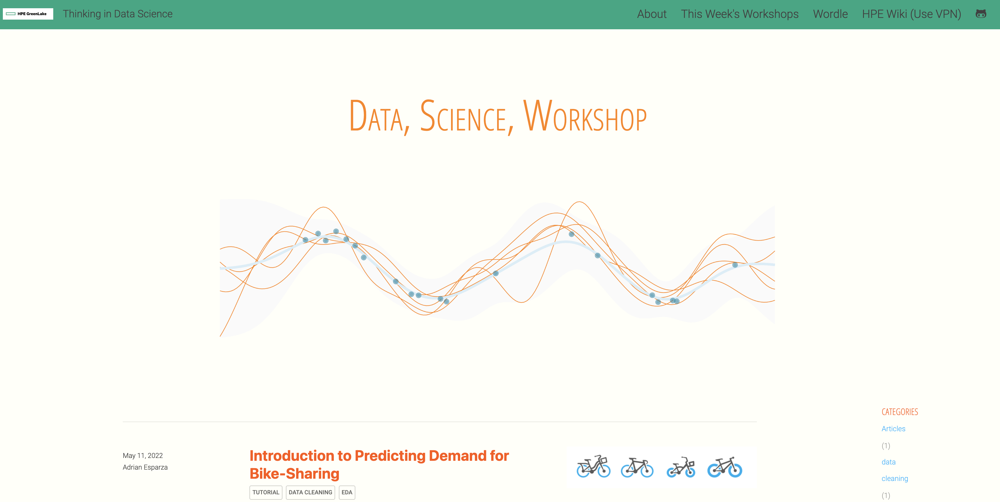
Next Workshop: Wednesday June 22nd, 2022 (bi-weekly)
Please join the Slack channel for questions and additional discussion:
#glcs-data-science-series
Recap from last workshop
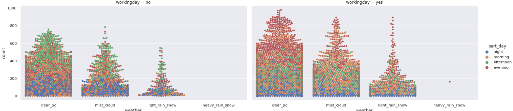
categorical features
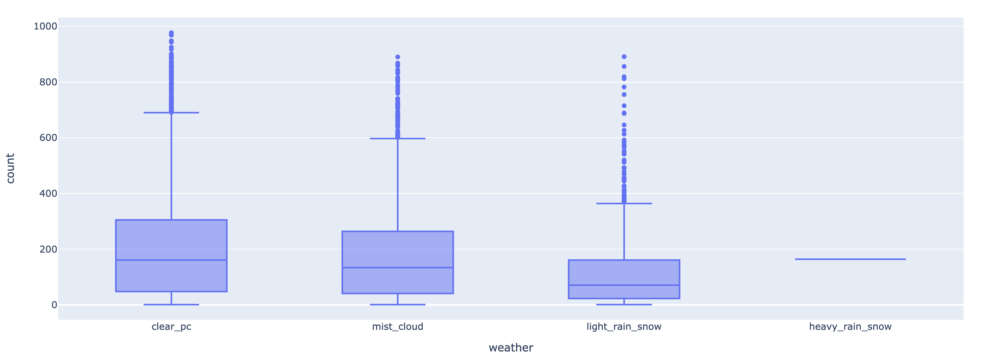
Advanced EDA
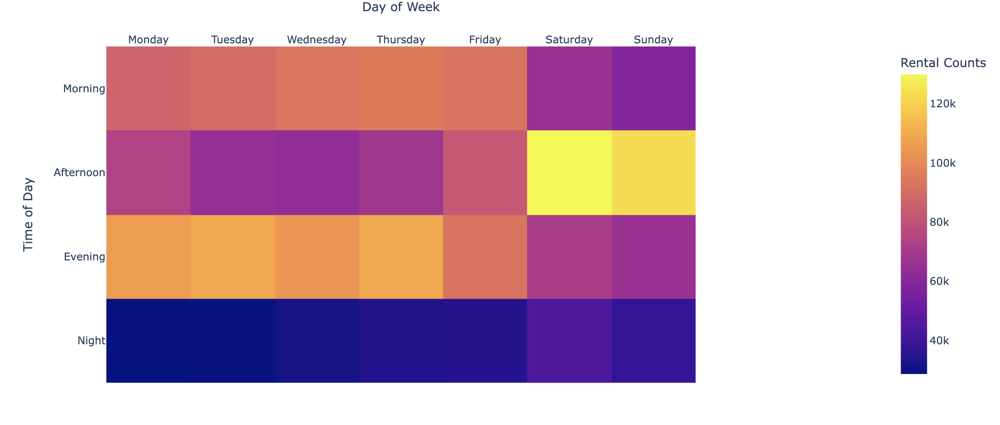
Impact of visualizing our data and uncover meaningful relationships
Any questions from last week’s session?
Workshop 3 Agenda (cont. DS Journey)
EDA (Statistical Testing)
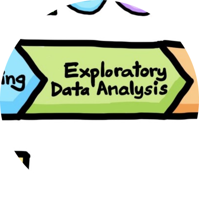
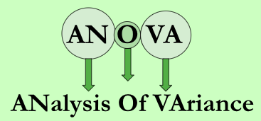
Intro to Modeling
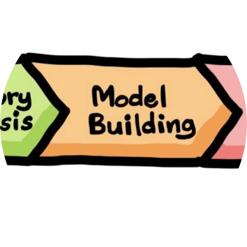
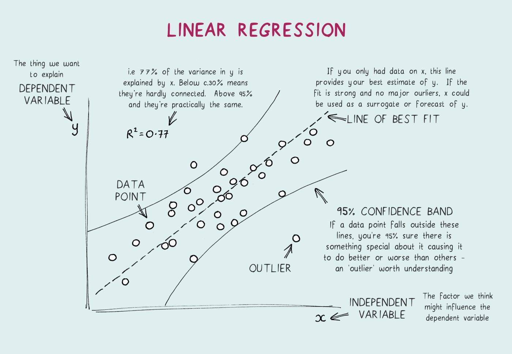
Statistics is centered on the idea of reasoning in an uncertain world, and reasoning from noisy data
What is ANOVA?
- As a tool for data analysis, ANOVA is typically used to learn the relative importance of different sources of variation in a dataset.
- ANOVA test used to compare the means of more than 2 groups (t-test can be used to compare 2 groups)
- ANOVA uses variance-based F test to check the group mean equality. Sometimes, ANOVA F test is also called omnibus test as it tests non-specific null hypothesis i.e. all group means are equal
What is a hypothesis and how do you set one up?
Null hypothesis: Groups means are equal (no variation in means of groups) H0: μ1=μ2=…=μp
Alternative hypothesis: At least, one group mean is different from other groups H1: All μ are not equal
We use p-values and some other test statistics to determine if the effects are real and not due to random chance!
More Reading on hypothesis testing and more on Wiki Page
Advantages of ANOVA
Get better information on variables (or treatments for experiments)
- test statistical significance for added predictors in a linear model.
Compared effect with the experimental error
Looks at interactions between variables
- interaction means that a trend within one level of a variable is not parallel to a trend within another level of the same variable.
Summary of calculating test statistics
- df means “the degrees of freedom in the source.”
- sum_sq means “the sum of squares due to the source.”
- F means “the F-statistic.”
- P means “the P-value.”
Rule of thumb: if p-value is less than .05, the relationship or mean difference we are observing is said to be statistically significant
see example in this week’s notebook
ANOVA Results Table
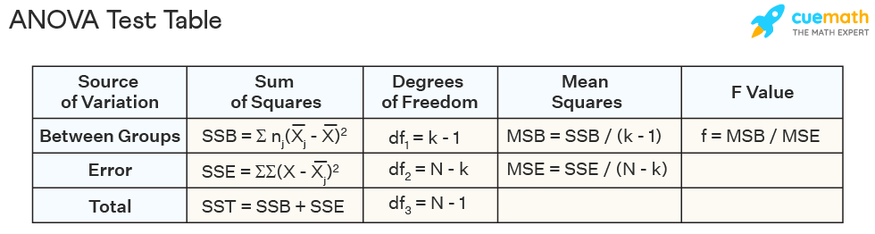Now, let’s consider the row headings:
- Factor or Between Groups means the variability due to the factor of interest.
- Error means the variability within the groups or unexplained random error.
- Consider this the remainder of the variation after accounting for the factor above
- Total means the total variation in the data from the grand mean
ANOVA and Regression libraries
# import statistical test model functions
import statsmodels.api as sm
# import ordinary least square model
from statsmodels.formula.api import ols
# Ordinary Least Squares (OLS) model
model_part_day = ols('count ~ C(part_day)', data=bike_df).fit()
anova_table_part_day = sm.stats.anova_lm(model_part_day, typ=2)
anova_table_part_dayNow the good stuff!
Modeling
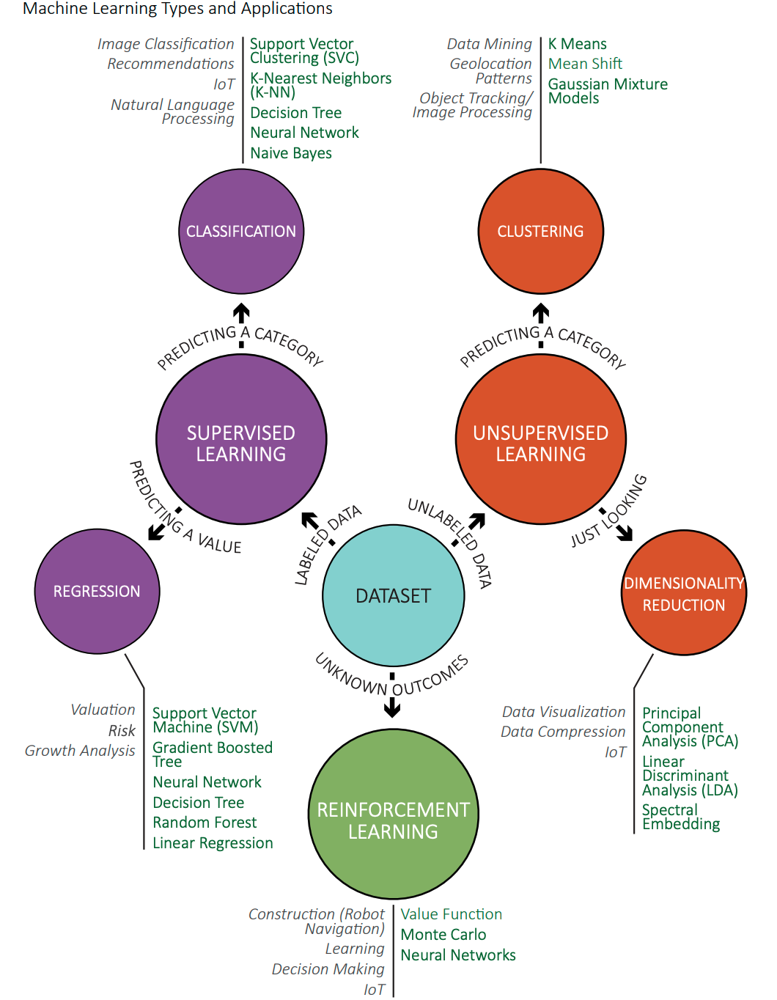Intro to Linear Regression
What is the goal of regression?
A statistical approach that calculates the relative strengths with which each input variable predisposes the outcome of interest.
Uses maximum likelihood method for estimating the coefficients of a statistical model
It is parametric model which means it has some statistical properties and assumptions that must be satisfied
What questions can we answer with linear regression?
In the context of marketing: What channel and sub-channel impression weights will generate the maximum return for a given line of business?
In the context of home prices: Which home features will predict the price of my home in the next 10 years?
In the context of our bike-sharing demand: Which environmental and temporal features explain the total demand for bike rentals?
Advantages of regression
- produces easily interpretable results
- as with any business decision, the ROI should be understood to the extent possible
- speed
- fastcomputing of model coefficients-aka feature weights
- confidence intervals
- estimated feature weights come with confidence intervals
Limitations of Regression
The drawbacks of linear models include:
- the inaccuracy of assuming linear relationships
- not all features have a linear relation to the target variable.
- the difficulty of using many inputs
- when features space is large, optimization for the coefficients is challenging
- multidimensional problems
- we run into collinearity issues (violation of model assumptions)
Model Formula Expression
\(y=\beta_{0}+\beta_{1}x_{1}+\ldots+\beta_{p}x_{p}+\epsilon\)
- linear regression model predicts the target as a weighted sum of the feature inputs
- the betas ( \(\beta_{j}\)) represent the learned feature weights/ coefficients. The first weight in the sum (\(\beta_0\)) is called the intercept and is not multiplied with a feature.
- the epsilon ( \(\epsilon\)) is the error we still make,
- the difference between the prediction and the actual outcome.
What is being optimized?
Finding the value of the weights
\(\hat{\boldsymbol{\beta}}=\arg\!\min_{\beta_0,\ldots,\beta_p}\sum_{i=1}^n\left(y^{(i)}-\left(\beta_0+\sum_{j=1}^p\beta_jx^{(i)}_{j}\right)\right)^{2}\)
- ordinary least squares (OLS) method is usually used to find the weights that minimize the squared differences between the actual and the estimated outcomes
- finding the weight that gives us the smaller error rate possible
Interpreting feature weights!
Assuming statistical significance, the weight represents the average effect (direction and magnitude) of the feature on the outcome of interest or prediction.
If the value of the feature weight is positive (X) , one can say that an increase in X units increases the average outcome Y by X units.
In general, the higher the weight, the higher the effect of the weight is on the prediction, assuming the feature does not have a very low variance. We will need to construct an effect plot on the full model in order to determine which features are more influential (next workshop series).
Interpreting a numerical features
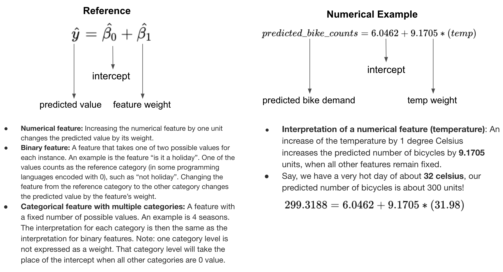Interpreting a binary features
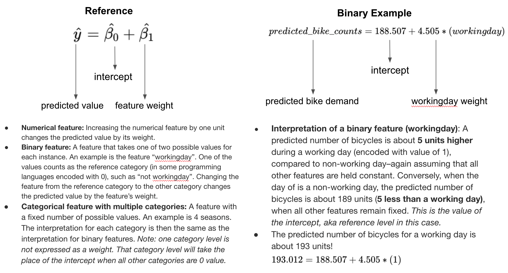Interpreting a categorical features
similar to binary features
But what if we have, say 4 levels/unique category values?
Can you take a shot at explaining the feature “season” in our bike rental dataset?
\(\#bike\:rentals=intercept+spring*(is\_spring)+\\+summer*(is\_summer)+fall*(is\_fall)\\+winter*(is\_winter)\)
Time for Lab!